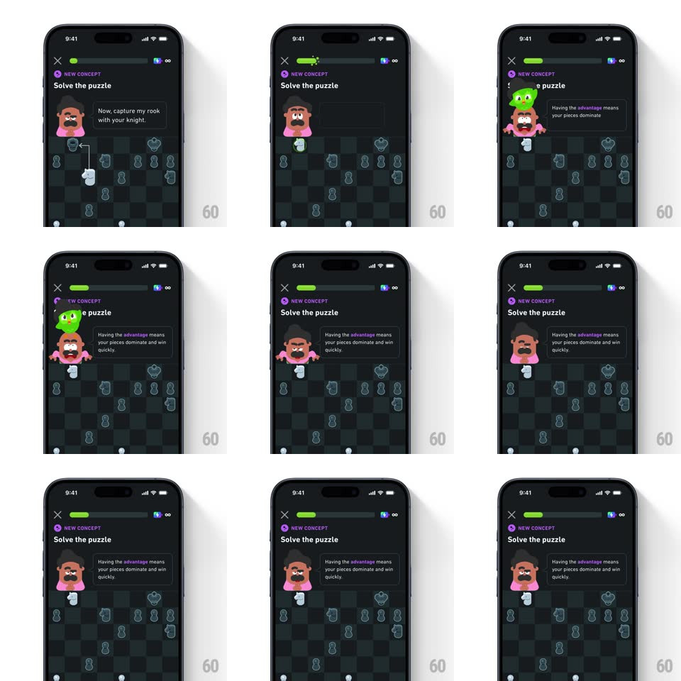

Media
Frame-by-frame

Rebuild this animation 1:1: Duolingo Chess' Duo cameo - solve the puzzle and Duo the owl pops up from behind Oscar's head with a springy bounce, then retreats as Oscar takes the frame back.

Rebuild this animation 1:1: Duolingo Chess' Duo cameo - solve the puzzle and Duo the owl pops up from behind Oscar's head with a springy bounce, then retreats as Oscar takes the frame back.
## Integration
Integration: stack-agnostic spec - springs given as stiffness/damping, timed motions as duration + curve; map every value to your framework and animation library of choice.
## Scene
Duolingo Chess, near-black: "NEW CONCEPT" purple tag, "Solve the puzzle" title, Oscar top-left with his instruction bubble ("Now, capture my rook with your knight."), the green progress bar, and the board with a hint arrow showing the knight's capture path. Post-solve bubble: "Having the advantage means your pieces dominate and win quickly."
## Motion spec
Pattern: springy Duo pop-up from behind the mascot's head.
- The lesson starts with the hint arrow drawing its path on the board (stroke draw, 500ms) and a green ring pulsing on the target square (1s loop).
- On the correct capture: the captured piece slides off (200ms), then Duo pops from behind Oscar's head - scale 0 -> 1.15 -> 1 with spring ~400/12 (a clear overshoot), rising 24px and tilting in 6deg, wings half-spread.
- Duo holds for ~900ms with a happy head-bob (two quick 4px dips), then ducks back down behind Oscar (scale 1 -> 0 with a 150ms ease-in, 20px drop).
- Oscar then slides back to center-left (250ms) and his bubble crossfades to the explanation ("Having the advantage...") with "advantage" highlighted in purple (200ms).
- The progress bar fills its segment during Duo's pop (green wipe, 350ms).
## Calibration
- Duo must emerge from behind Oscar - masked by Oscar's head layer, never appearing beside him.
- The pop is fast and the hold short - a cameo, not a takeover.
## Reduced motion
Duo fades in above Oscar (250ms) without the spring or bob.
## Don't miss
- The purple "NEW CONCEPT" tag matches the purple word-highlight in the explanation bubble.
- Duo's green is the same green as the progress fill - Duolingo's exact brand green.